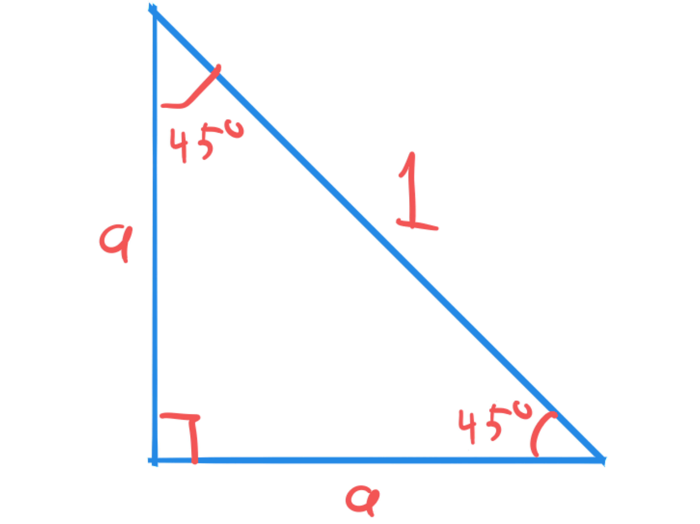
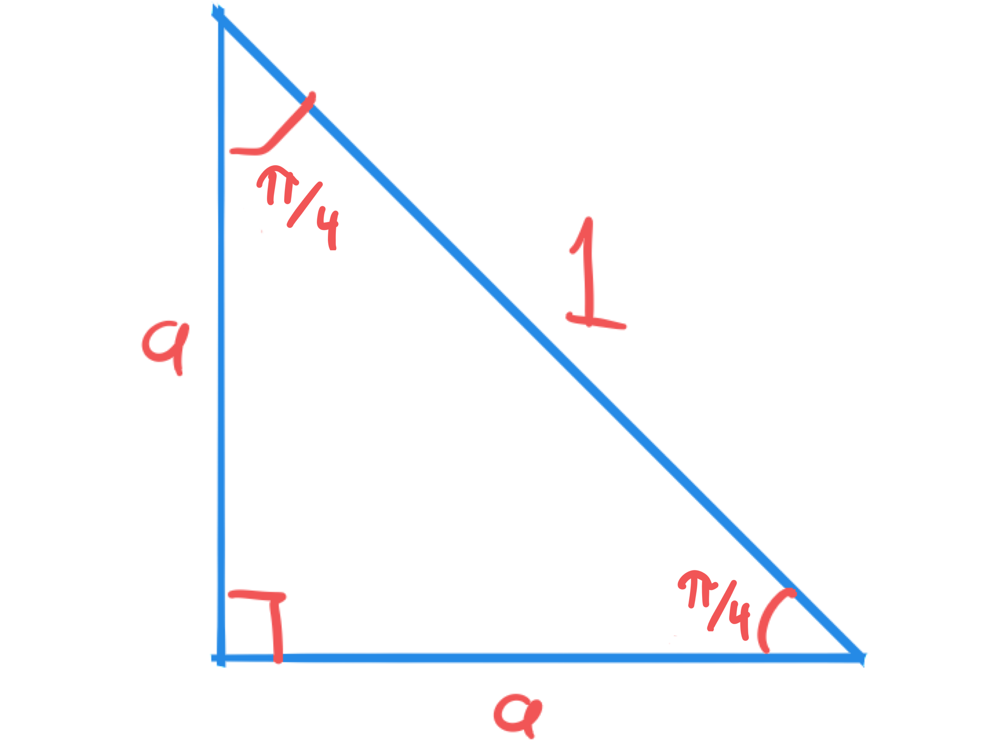
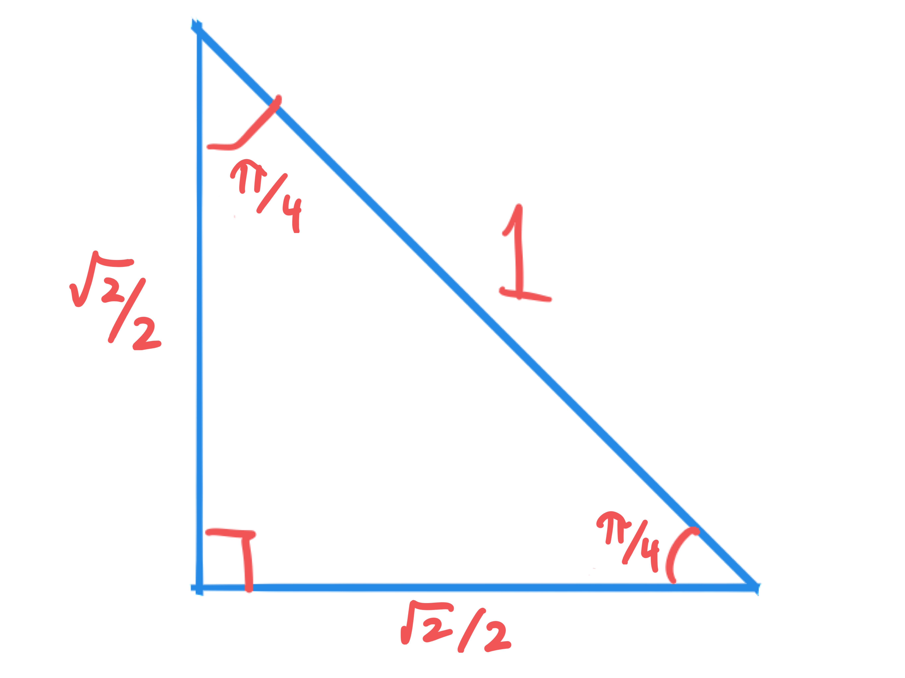
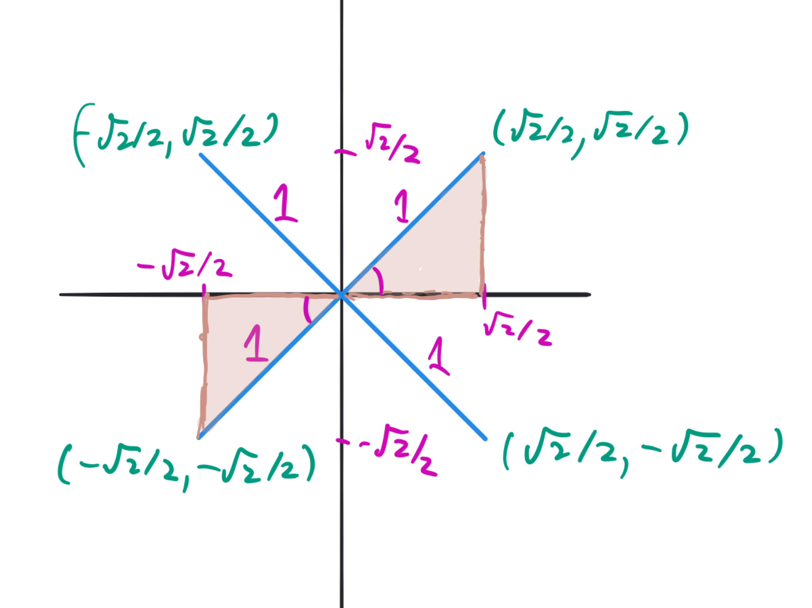
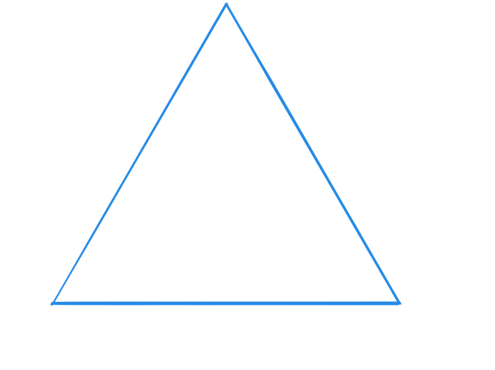
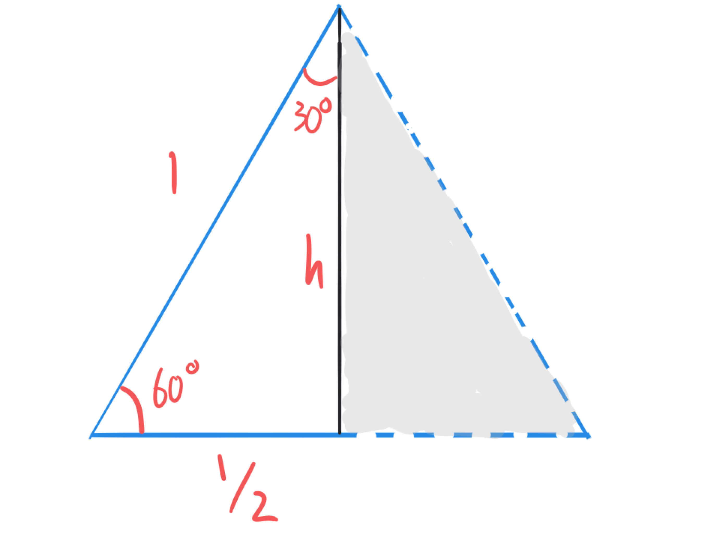
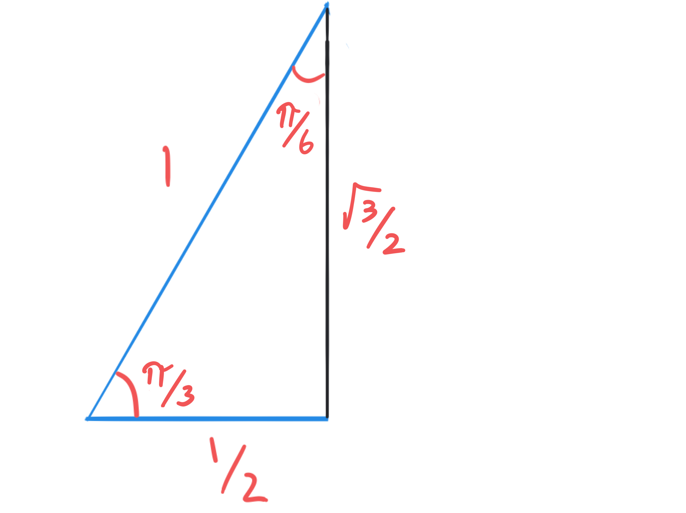

Special Triangles#
There are two right triangles taught in MAT1001 that every student should be familiar with. These two triangles show up often when instructors want to see if students understand the relationship between the \(xy\) coordinates and the angle and distance of that point from the origin.
This shows up in this subject when converting between Cartesian coordinates and polar, cylindrical, or spherical coordinates. One instance of this will occur on the 2026 final exam. This also appears when using complex numbers in the form \(r e^{i\theta}\).
We’re going to look at these two triangles assuming that the hypotenuse has length \(1\) and determine the other sides of the triangles. However, we can scale all of the sides by the same constant \(r\) if we are looking at a specific case where a point has distance \(r\) from the origin.
The \(45\)-\(45\)-\(90\) triangle#
We start by considering a right triangle whose two smaller angles are both \(45^\circ\). This is called a 45-45-90 triangle.
{kind=link}

Fig. 2 A 45-45-90 triangle with hypotenuse \(1\), showing the angles labelled in degrees. The legs of the right triangle have the same length, but have not yet been calculated.#
In radians, the two smaller angles are \(\pi/4\).
{kind=link}

Fig. 3 A 45-45-90 triangle with hypotenuse \(1\), showing the angles labelled in radians.The legs of the right triangle have the same length, but have not yet been calculated.#
To find the two legs of the triangle, we use the Pythagorean Theorem: \(a^2+a^2 = 1^2\), so \(2a^2 = 1\). Thus \(a = 1/\sqrt{2}\). Often we ``rationalize’’ the denominator to rewrite it as \(a=\sqrt{2}/2\).
{kind=link}

Fig. 4 A 45-45-90 triangle with hypotenuse \(1\), showing the angles labelled in radians.The legs of the right triangle both have length \(\sqrt{2}/2\).#
With this layout, we can quickly find \(\sin(\pi/4)\), \(\cos(\pi/4)\), and \(\tan(\pi/4)\).
If we want to find other (odd) multiples of \(\pi/4\), we can draw the triangle with one vertex at the origin, and one leg aligned with the \(x\) or \(y\) axis so that the hypotenuse has the appropriate angle.
{kind=link}

Fig. 5 Using the 45-45-90 triangle to find the coordinates of points with angles \(\pi/4\), \(3\pi/4\), \(5\pi/4\), and \(7\pi/4\). Two triangles are highlighted, which can be used to find the values for \(\theta = \pi/4\) and for \(\theta = 5\pi/4\) (or equivalently \(-3\pi/4\)).#
Self test#
You should be able to answer the questions below without referring to the diagrams above. Instead, you should be able to draw your own diagram.
Find \(\sin(\pi/4)\), \(\cos(\pi/4)\), and \(\tan(\pi/4)\).
If we take a ray at angle \(\pi/4\), then it splits between the positive \(x\) and \(y\) axes.
We draw this ray with length \(1\). By adding a vertical line from the end point down to the \(x\) axis, we can draw a right triangle that includes with hypotenuse \(1\) (the ray) and one leg parallel to the \(y\) axis and the other leg along the \(x\) axis.
Because it is a 45-45-90 triangle the two legs both have length \(\sqrt{2}/2\). So the point at the end of the ray is \((\sqrt{2}/2, \sqrt{2}/2)\). Then we have \(\sin(\pi/4) = y/r = \sqrt{2}/2\), while \(\cos(\pi/4) = x/r = \sqrt{2}/2\) and \(\tan(\pi/4) = y/x = 1\).
Find \(\sin(3\pi/4)\), \(\cos(3\pi/4)\), and \(\tan(3\pi/4)\).
If we take a ray at angle \(3\pi/4\), then it is \(\pi/4\) more than \(\pi/2\). So it splits the positive \(y\) and negative \(x\) axes. (We could equivalently say it is \(\pi/4\) less than \(\pi/2\).)
We draw this ray with length \(1\). By adding a vertical line from the end point down to the (negative) \(x\) axis, we can draw a right triangle that includes with hypotenuse \(1\) (the ray) and one leg parallel to the \(y\) axis and the other leg along the (negative) \(x\) axis.
Because it is a 45-45-90 triangle the two legs both have length \(\sqrt{2}/2\). So the point at the end of the ray is \((-\sqrt{2}/2, \sqrt{2}/2)\). Then we have \(\sin(3\pi/4) = y/r = \sqrt{2}/2\), while \(\cos(3\pi/4) = x/r = -\sqrt{2}/2\) and \(\tan(3\pi/4) = y/x = -1\).
Find \(\sin(7\pi/4)\), \(\cos(7\pi/4)\), and \(\tan(7\pi/4)\).
If we take a ray at angle \(7\pi/4\), then it is \(\pi/4\) less than \(2\pi\). So it splits the negative \(y\) and positive \(x\) axes.
We draw this ray with length \(1\). By adding a vertical line from the end point up to the \(x\) axis, we can draw a right triangle that includes with hypotenuse \(1\) (the ray) and one leg parallel to the \(y\) axis and the other leg along the \(x\) axis.
Because it is a 45-45-90 triangle the two legs both have length \(\sqrt{2}/2\). So the point at the end of the ray is \((\sqrt{2}/2, -\sqrt{2}/2)\). Then we have \(\sin(\pi/4) = y/r = -\sqrt{2}/2\), while \(\cos(\pi/4) = x/r = \sqrt{2}/2\) and \(\tan(\pi/4) = y/x = -1\).
Find \(\sin(-\pi/4)\), \(\cos(-\pi/4)\), and \(\tan(-\pi/4)\).
The angle from the origin to a point \(P\) is \(3\pi/4\). \(P\) is distance \(3\sqrt{2}\) away from the origin. Without using any trigonometric functions, find the \(x\) and \(y\) coordinates of \(P\).
\((-3,3)\)
Draw the ray with length \(3\sqrt{2}\) and the given angle to point \(P\). If we draw a line down from the end point \(P\) to the \(x\)-axis, this defines a right triangle with both sides having the same length \(a\) and hypotenuse of length \(3 \sqrt{2}\).
By the Pythagorean theorem \(a^2+a^2 = (3\sqrt{2})^2\) so \(2a^2 = 2\cdot 3^2\), Thus \(a=3\). By looking at the picture (you have drawn the picture, right?), we see that the \(x\) coordinate is negative but the \(y\)-coordinate is positive. So it is at \((-3,3)\).
The angle from the origin to a point \(P\) is \(-3\pi/4\). \(P\) is distance \(5\) away from the origin. Without using any trigonometric functions, find the \(x\) and \(y\) coordinates of \(P\).
\((-5\sqrt{2}/2,-5\sqrt{2}/2)\)
Draw the ray with length \(5\) and the given angle to point \(P\). This ray splits the angle between the negative \(x\) and negative \(y\) axes. If we draw a line from the end point \(P\) to the \(x\)-axis, this defines a right triangle with both sides having the same length \(a\) and hypotenuse of length \(5\).
By the Pythagorean theorem \(a^2+a^2 = (5)^2\) so \(2a^2 = 5^2\), Thus \(a=5/\sqrt{2}\) or \(5\sqrt{2}/2\). By looking at the picture (you have drawn the picture, right?), we see that both the \(x\) and \(y\) coordinates are negative. So it is at \((-5\sqrt{2}/2,-5\sqrt{2}/2)\).
The 30-60-90 triangle#
To build a 30-60-90 triangle, we first build an equilateral triangle all of whose sides are length \(1\).
{kind=link}

Fig. 6 An equilateral triangle with side length \(1\). All angles are \(60^\circ\) or \(\pi/3\) radians.#
Then we draw an altitude from one vertex to the opposite side. It splits the opposite side into two equal pieces, and the angle is split into two equal angles.
{kind=link}

Fig. 7 An equilateral triangle with side length \(1\), split by an altitude.#
We focus on one of the right triangles created. One side has length \(h\), the other has length \(1/2\), and the hypotenuse has length \(1\). So \(h^2 + (1/2)^2 = 1^2\). Rearranging
Warning: A common error is to incorrectly replace \(\sqrt{1^2-\left(\frac{1}{2}\right)^2}\) with \(1-\frac{1}{2} = \frac{1}{2}\). Because much of Vector Calculus deals with concepts related to distance and length is usually calculated using the Pythagorean theorem, we are often taking the square root of a sum or difference of squares. This error is one of the most common reasons that students fail this subject.
{kind=link}

Fig. 8 One of the right triangles created by the altitude. The angles are \(\pi/3\) and \(\pi/6\). The hypotenuse has length \(1\), and the side opposite the \(\pi/6\) angle has length \(1/2\) and the other side has length \(\sqrt{3}/2\).#
From this triangle, we can get \(\sin(\pi/3)\), \(\cos(\pi/3)\), \(\tan(\pi/3)\) as well as \(\sin(\pi/6)\), \(\cos(\pi/6)\), \(\tan(\pi/6)\).
Self-test#
We can use this triangle to help calculate \(\sin(\theta)\), \(\cos(\theta)\), and \(\tan(\theta)\) by drawing a 30-60-90 triangle whose hypotenuse is a ray out of the origin with angle \(\theta\), one of the sides is on the \(x\) or \(y\) axis, and the other is parallel to the \(x\) or \(y\) axis. This works for angles \(\theta = \pi/6\), \(\pi/3\), \(2\pi/3\), \(5\pi/6\), \(7\pi/6\), \(4\pi/3\), \(5\pi/3\), and \(11\pi/6\).
For each angle above, sketch a ray coming out of the origin with that angle.
Choose at least \(3\) of the rays in the previous question. For each, construct a 30-60-90 triangle that you can use to calculate \(\sin\), \(\cos\), and \(\tan\) of the angle.
Choose some of the angles above and find the coordinates of a few points at distance some positive integer (greater than \(1\)) from the origin. Do not use any trigonometric functions to do this. Instead draw the relevant triangles.
Note - when I use the 30-60-90 triangles in my work, I draw the triangle every time and rederive the lengths. I do not count on being able to memorize any of this.